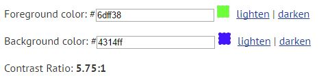
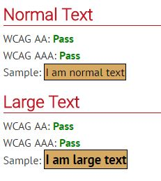
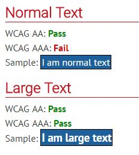
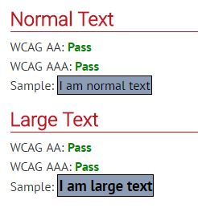
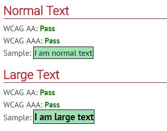

What is Colour palettes?
Colour palettes is often refered to a range of colours, that is used to choose between multiple colours to use from. It is generally used by many programmers or designers to select colours with the best contrast in background and foreground.
Contrast between Colours
This website can be used to test multiple colours together to see whether or not they meet the standards, allowing it to be accessible to everyone: Webaim colour tester
Here is a list of useful combanations of colours that can be used on any webpage! w3schools colour Palettes

Text Colour contrast
below shows the text colour of the foreground to be #6dff38
and the background colour to be #4314ff, these two colours have a contrast ration of 5.75:1 which is pretty good as it passes the double A test, however would now pass the triple A test that would be required of in most Australian.gov websites standards.

Below we have the colours used for Header(1), The foreground is #000000 and the background is #d6aa63.
Together they have the contrast ratio of 9.79:1

Header 1 Imagine sourced from WebAIM colour palette 2017
Below we have the colours used for Header(2), The foreground is #ffffff and the background is #1D609C.
Together they have the contrast ratio of 6.55:1

Header 2 Imagine sourced from WebAIM colour palette 2017
Below we have the colours used for Header(3), The foreground is #000000 and the background is #8d9db6.
Together they have the contrast ratio of 7.63:1

Header 3 Imagine sourced from WebAIM colour palette 2017
Lastly we have the colours used for the footer, The foreground is #000000 and the background is #9fe2b3.
Together they have the contrast ratio of 14:1

Footer Imagine sourced from WebAIM colour palette 2017